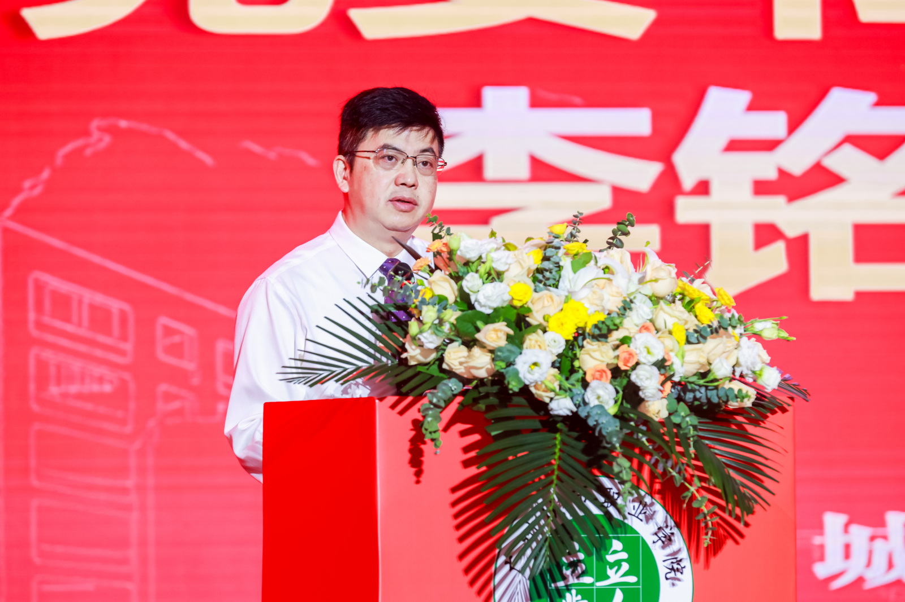
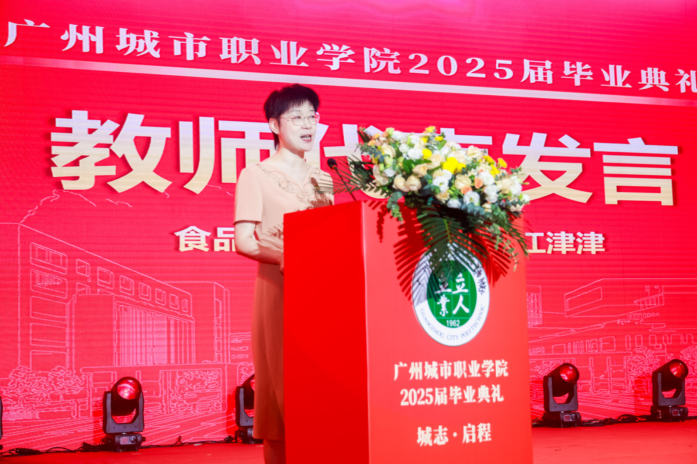
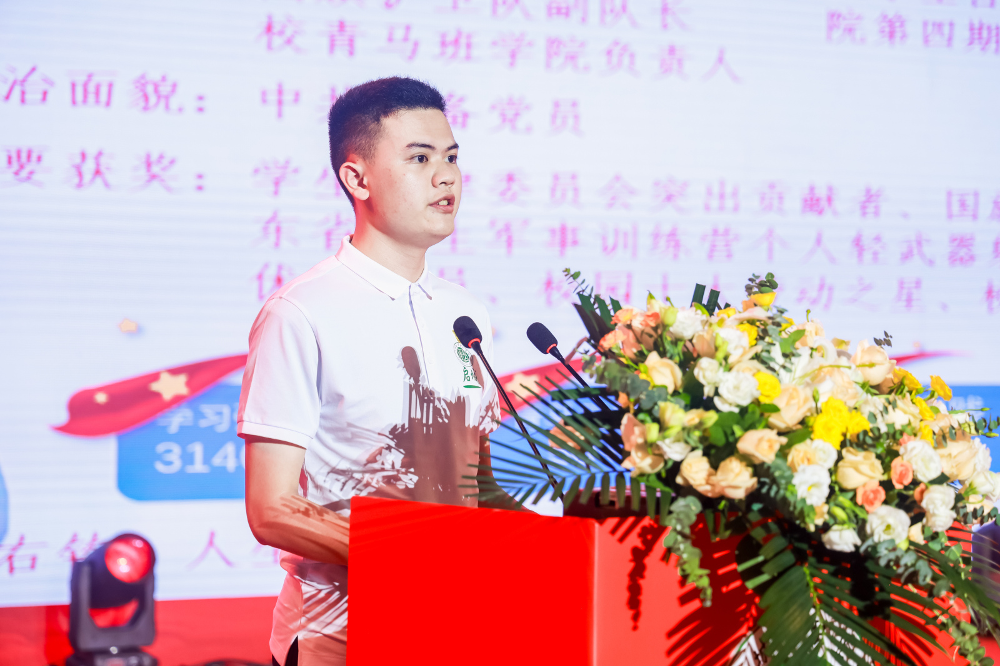
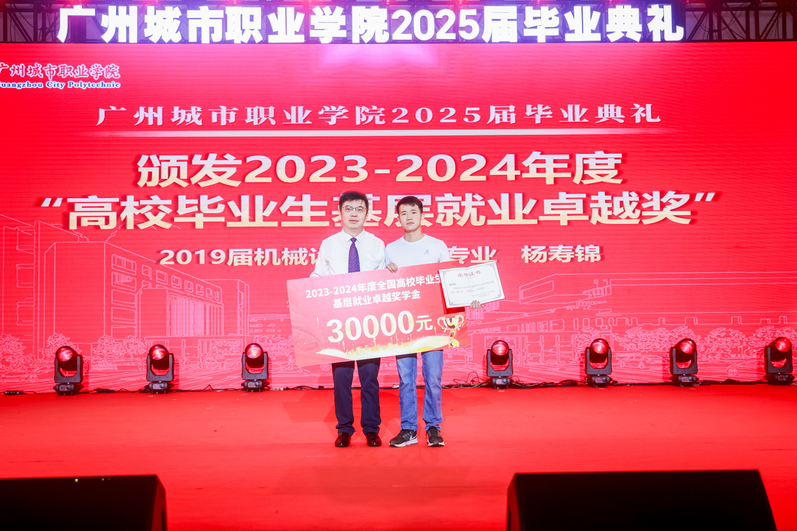
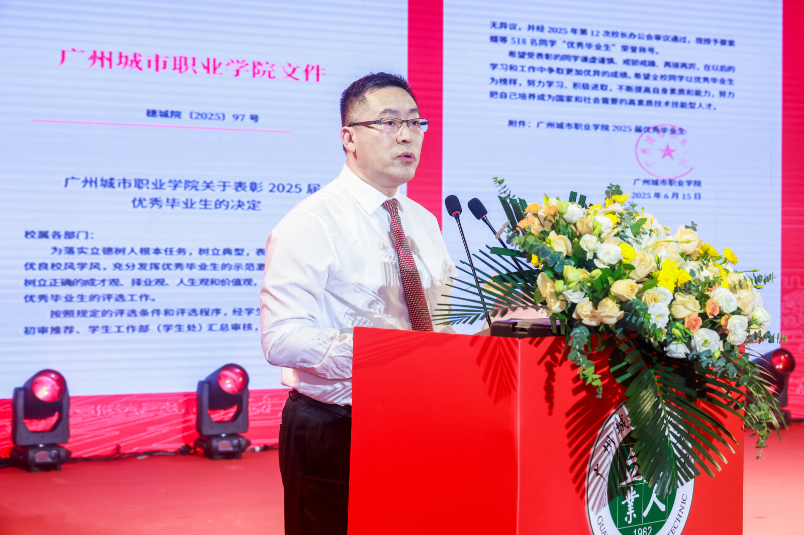
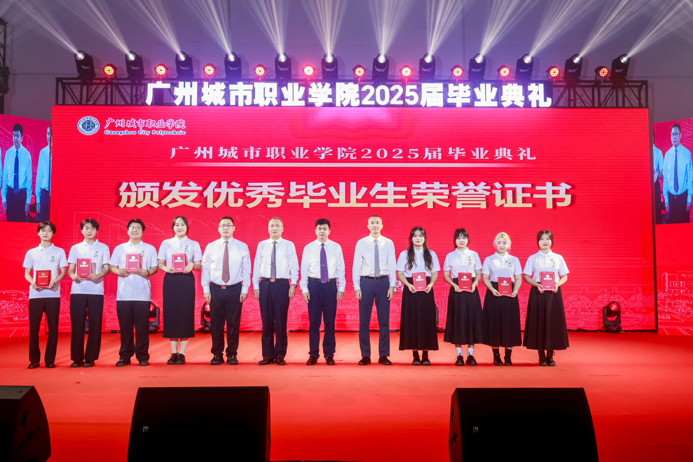
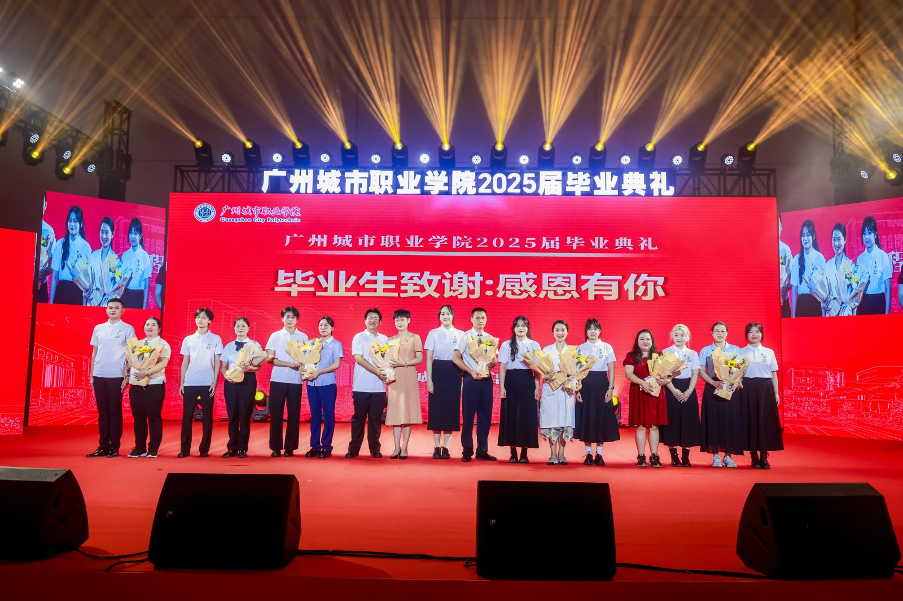
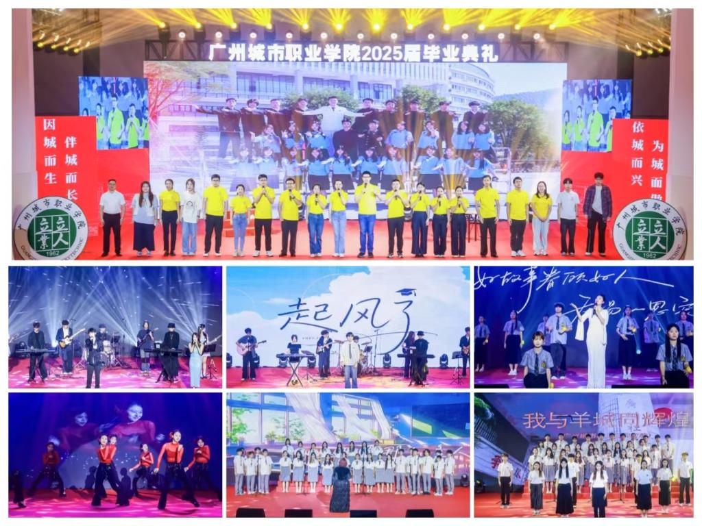
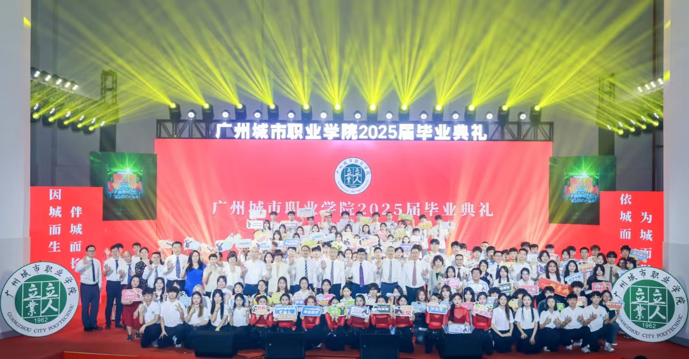

城志·启程——我校隆重举行2025届毕业典礼（图文）
本网讯 6月21日上午10点，科教城校区A4大礼堂内流光溢彩，气氛庄重而热烈。以“城志・启程”为主题的2025届毕业生毕业典礼在此隆重举行！ 党委书记、校长李铭辉，党委副书记陈立新，党委委员、纪委书记巩建东，党委委员、副校长张胜红，以及学校各党政职能部门负责人、各二级学院党政负责人、教师代表、 校友代表、学生及家长代表近600人共聚一堂，共同见证学子们满载青春记忆、怀揣未来梦想的重要时刻。

李铭辉书记致辞
毕业典礼围绕“祝福加载 青春启城”“师友同行 薪火相传”“荣耀时刻 使命在肩”“星辰大海 未来可期”四个篇章展开。典礼现场，李铭辉发表了情真意切的致辞， 他代表学校向顺利完成学业的2025届6379名毕业生致以最热烈的祝贺和美好的祝福，向辛勤付出的全体教职员工以及默默支持的广大家长表示衷心的感谢。李铭辉在致辞中回顾了同学们在校期间， 学校各项事业取得的重要进展：从跻身“省双高”建设行列，到科教城新校区拔地而起；从“创强”排名跨越式提升，到一项项国家级办学成果的零的突破。 同时，他特别感谢同学们在新校区启用初期对学校工作的理解与包容。
李铭辉指出，当前学校正在全力推进“强基、提质、升档”三大任务和“创强、双高、升本”三大目标，作为毕业生永远的精神家园，学校未来的发展值得大家持续关心和期待。 最后，他向全体毕业生提出三点殷切希望：一是以理想照亮前程，勇挑时代重担，始终与时代同向，与祖国同行；二是以匠心铸就卓越，在未来的职业选择与事业发展中，弘扬工匠精神， 用一技之长开创属于自己的一片天地；三是以韧劲行稳致远，勇敢面对生活中的各种遭遇，顺境不傲，逆境不屈，不急不躁，坦然前行。

江津津老师发言
食品健康学院江津津老师作为教师代表上台发言。她谆谆叮嘱大家铭记四个珍惜：珍惜每一个提升的机会，珍惜所学到的技能，珍惜每一次实践的机会，珍惜同学之间的情谊。 她殷切期望同学们永葆终身学习的热情，在兴趣的基础上形成学习的快乐体验，同时，将所学知识技能应用于社会生产与生活中，以天下为己任，报效国家，服务民众。

谢叶枫同学发言
电子信息工程学院谢叶枫同学作为优秀毕业生代表，深情回顾了自己的大学时光。“学校的深厚底蕴与师长的谆谆教诲，为我们筑牢了成长根基”， 他代表全体毕业生郑重承诺：“将始终铭记国旗下的青春誓言，在科技创新、乡村振兴、社会服务等各领域勇挑重担，让理想信念在奋斗中闪光。”

邓燕娜校友发言
数字商贸学院2014届毕业生邓燕娜作为校友代表，分享了毕业十年的奋斗历程。她从专升本求学经历讲起，以“食堂打菜阿姨手抖神功”等校园趣事切入， 生动讲述了自己创立餐饮连锁品牌及抖音电商公司的创业故事。她特别列举返乡创业师兄、红十字会志愿者师兄等优秀校友案例，以自身和同窗的经历勉励师弟师妹， 并祝愿毕业生们披荆斩棘，收获理想未来。她的分享真挚而充满力量，充分展现了广城职人砥砺前行、不惧挑战的奋斗精神。

颁发高校毕业生基层就业卓越奖
2019届毕业生杨寿锦扎根英德市兴民农机专业合作社，带领村民开垦特色农田、打造农产品品牌，以实干展现青年担当，获评“高校毕业生基层就业卓越奖”， 李铭辉为其颁奖。为加强校友联络工作，连接母校与校友的温暖桥梁，陈立新与校友杨寿锦给2025届校友联络员颁发聘书。

张胜红副校长宣读了决定
张胜红宣读了《关于表彰2025届优秀毕业生的决定》《关于准予陈健润等6379名2025届普通高等教育全日制专科生毕业的决定》。

颁发毕业证书和优秀毕业生荣誉证书
在热烈的掌声中，校领导为优秀毕业生及毕业生代表颁发证书。这张证书，不仅是对学业圆满的见证， 更烙印着学校的殷切期许——期许学子们带着在广城职院沉淀的学识与品格，以使命为帆，奔赴更广阔的天地，书写人生新篇章。

毕业生感恩献花
在毕业生致谢环节中，毕业生代表向任课教师、辅导员、家长以及宿管员、安保员、校医、食堂阿姨等献花致谢，用鲜花传递深藏心底的感恩之情。

文艺表演
典礼现场温情涌动。师生祝福视频与精心编排的文艺表演交织，深深打动了在场的每一个人。当老师们亲切的话语在会场响起，原来每一次擦肩、每一次叮咛，此刻都化作心底最温柔的支撑， 稳稳托起即将扬帆的航程；乐队歌声中满载着真挚的期许：要温暖如阳，勇敢如风；辅导员情景剧《以爱为径，伴你起航》用温暖的片段，生动展现了日夜守护、相伴成长的师生深情； 歌曲《世界赠与我的》唱出校园时光的珍贵；街舞表演《未来节拍》以动感节奏点燃全场，释放着青春的蓬勃活力，也仿佛叩响了通往新征程的大门；歌曲《世界那么多人》诉说相遇的珍贵， 将校园里的相识相知定格为人生独特宝藏；当全场齐唱校歌《我与羊城同辉煌》时，熟悉的旋律中，毕业生们回望三年校园岁月，更坚定了奔赴未来的勇气。 这歌声，既是对青春校园的深情告别，更是向星辰大海的豪迈宣言。

合影留念
当校歌声渐歇，2025届毕业典礼也圆满落下帷幕。愿全体毕业生带着母校的祝福与期许，心怀热忱，勇毅前行，在青春的广阔天地间奋力奔跑，奔赴属于自己的星辰大海，书写无愧时代的精彩篇章！
（供稿/供图：学生工作部（学生处） 审核：组织部（宣传部））
版权所有©未来信息学院